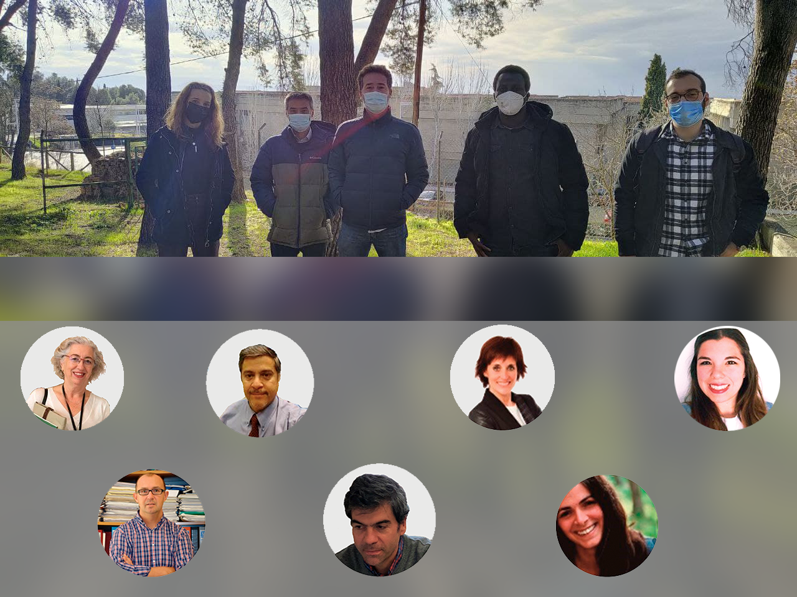

El pasado 25 de enero, el grupo de investigación del proyecto Coste-Efectividad de Productos Médicos de Terapias Avanzadas se reunió en Granada para poner en común los logros y tareas pendientes del proyecto. Durante el transcurso de la reunión, donde los asistentes acudieron tanto de forma virtual como física, cada grupo de trabajo presentó sus avances.
| Grupo de trabajo | Presentador |
Resumen |
|---|---|---|
| David Epstein |
Presentación de la sesión |
|
| WP1 | Lorena Aguilera | Factores asociados con el éxito o fracaso de las ATMPs |
| WP2 | Juan Carlos Rejón | La innovación como criterio de evaluación de ATMPs y encuestas con expertos |
| WP3 | Antonio Orly de Labry | Revisión literaria de evaluaciones económicas de ATMPs |
| WP3 | Jaime Espín | El precio y reembolso de las ATMPs |
| WP4 | Rosario Mata y Ángela Ponce | Contacto con representantes y pacientes. Ensayos clínicos. |
Tras la introducción que realizó David Epstein, Lorena Aguilera presentó el trabajo que realizó Work Package 1 con respecto a las dificultades y factores específicos asociados con el éxito o fracaso de las ATMPs (terapias avanzadas). Esta revisión se centró en las principales barreras y facilitadores para la traslación de las terapias a la práctica clínica y el rol de la excepción hospitalaria. La revisión literaria encontró que las principales barreras se encontraban entorno a 1) los problemas de salud de los pacientes y el uso actual de la tecnología, 2) la descripción técnica de las terapias, 3) la seguridad de los tratamientos, 4) la efectividad clínica esperada, 5) la ausencia de evaluaciones económicas, 6) problemas éticos, 7) aspectos organizacionales, 8) algunos aspectos sociales y 9) algunos aspectos legales. La presentación concluyó con algunas recomendaciones para superar las barreras como la homogenización de los mecanismos de evaluación, la realización de ensayos clínicos aleatorizados, la adaptación de los mecanismos de evaluación cuando los RCT no sean posible, la creación de bases de datos conjuntas y estandarizadas, y la monitorización continua de las ATMPs para mejorar su traslación.
Ver artículo 'Revisión sistemática de las barreras asociadas a la implementación e implantaciónde las ATMPs' Descargar presentación WP1A continuación, Juan Carlos Rejón realizó dos presentaciones enfocadas en el papel del criterio innovación en las evaluaciones de ATMPs. La primera presentación se centró en una investigación ya publicada (enlace) en la que se realizó una revisión literaria para identificar cómo se define, se evalúa y se premia la innovación en el ámbito de las ATMPs. En esta presentación se concluye que el concepto de innovación en España podría definirse entorno a las dimensiones 1) step-change, 2) convenience, 3) strength of evicence base, 4) impact on future R&D, aunque las dimensiones del valor en otros países dependen de cada sistema. En la segunda presentación, se presentó un trabajo aún no concluido en el que se encuestará a expertos para comprender su definición de innovación.
Descargar presentación de J. Carlos Rejón sobre innovaciónVisitar artículo 'How innovation can be defined, evaluated and rewarded in health technology assessment'
A continuación, Antonio Orly de Labry presentó los resultados de una revisión sistemática de la literatura en la que se estudió el papel de las evaluaciones económicas de ATMPs. En esta revisión, se analizaron 38 evaluaciones económicas sobre terapias génicas, celulares y tisulares, explorando su metodología, resultados, riesgo de sesgo, supuestos, fuentes de datos, etc. Se concluye que los decisores están dispuestos a pagar por estas terapias siempre que exista suficiente evidencia de su coste-efectividad. Para ello, la evaluación económica debe superar los desafíos que plantea la escasez de datos producida por la naturaleza de las enfermedades tratadas. Además, se descubrió un riesgo de sesgo importante atribuible a la existencia de conflictos de intereses.
Ir al poster de la revisiónDescargar presentación de WP3 
En la siguiente presentación, Jaime Espín presentó las dificultades tradicionalmente relacionadas con la financiación de terapias avanzadas y planteó una revisión de la literatura para recopilar diferentes opciones e ideas de financiación. En esta presentación se introdujeron algunos ejemplos de modelos como el modelo por subscripción o el modelo por resultado.
En último lugar, Rosario Mata y Ángela Ponce abordaron la tarea del proyecto relacionada con el contacto con los representantes y los pacientes. Así, se presentaron los resultados de un ensayo clínico de fase II sobre implante de córneas. Se planteó la posibilidad de emplear los datos de este ensayo clínico, y de otros si fuera posible, para realizar un análisis económico teniendo en cuenta las conclusiones y recomendaciones obtenidas a lo largo del proyecto.
Descargar presentación de WP4